<div>
  <!--  0">
  <circle-progress radius="30" percent="{{(drankwater*100/12)}}" outerStrokeGradient="true" *ngIf="currentDateIndex == 0"
    outerStrokeGradientStopColor="#00B8F6" showImage="true" imageSrc="../../../assets/img/water_glass_main.svg"
    imageHeight="50" imageWidth="50" [innerStrokeColor]="'rgb(125,125,125,0.2)'" [outerStrokeColor]="'#1437F4'"
    backgroundColor="#fff" outerStrokeWidth="3" innerStrokeWidth="3"
    title="{{roundingVal(totalTodaysCalories * 100/tolalCalories)}} " [titleColor]="'#1437F4'"
    subtitle="{{habitList?.length}} habits" [subtitleColor]="'#1437F4'" units="%" space="-3"
    [unitsColor]="'#1437F4'">
  </circle-progress> -->
 
  <ion-row>
    <ion-col class="ion-text-center ion-align-self-top">
      <span style="position: relative;
      top: -56px; white-space: nowrap;"><span style="color:#E50721;font-size: 1.2rem;font-weight: 600;">{{difference}}</span> Kcal</span>
    </ion-col>
  </ion-row>
</div>